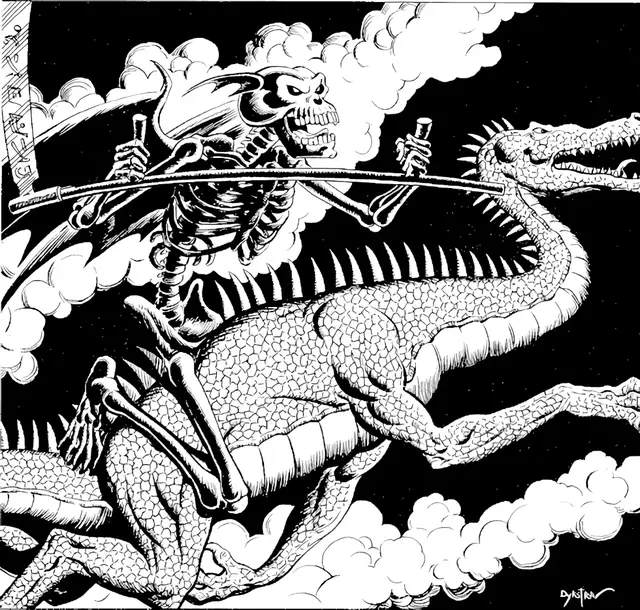

Йгорл, Лорд разрушения
Ygorl, Lord of Entropy
Большая Аберрация, хаотично-нейтральная, именной НИП

Класс Доспеха 20 (природный доспех)
Хиты 325 (26к10 + 182)
Скорость 40 футов, плавая 40 футов, лазая 40 футов
| мод | спас | ||
|---|---|---|---|
| СИЛ | 24 | +7 | +14 |
| ЛОВ | 18 | +4 | +4 |
| ТЕЛ | 24 | +7 | +14 |
| мод | спас | ||
|---|---|---|---|
| ИНТ | 20 | +5 | +5 |
| МДР | 16 | +3 | +3 |
| ХАР | 26 | +8 | +15 |
Навыки Запугивание +15, Магия +12, Обман +15, Убеждение +15
Сопротивление урону звук, кислота, огонь, холод, электричество
Иммунитет к урону некротическая энергия, яд; немагический дробящий, колющий, рубящий
Иммунитет к состояниям испуг, истощение, отравление, очарование
Чувства истинное зрение 120 футов, пассивное Восприятие 13
Языки Все, Телепатия 120 фт.
Опасность 23 (50000 опыта)
Бонус мастерства +7
Особенности
Аура разрушения. Каждое существо, которое оканчивает свой ход в пределах 15 футов от Йгорла и не является конструктом или нежитью, получает 14 (4к6) урона некротической энергией.
Легендарное сопротивление (3/день). Если Йгорл проваливает спасбросок, он может вместо этого сделать спасбросок успешным.
Сопротивление магии. Йгорл совершает с преимуществом спасброски от заклинаний и прочих магических эффектов.
Врождённое колдовство. Базовой характеристикой Йгорла является Харизма (Сл спасброска от заклинания 23, +15 к попаданию атаками заклинаниями). Йгорл может накладывать следующие заклинания, не нуждаясь в материальных компонентах:
• Неограниченно: усыхание [blight], мерцание [blink], снаряд хаоса [chaos bolt], тьма [darkness], обнаружение магии [detect magic], полёт [fly], щит [shield]
• 3/день каждое: круг смерти [circle of death], обессиливание [enervation], воображаемый убийца [phantasmal killer], знак [symbol] (только разногласие)
• 2/день каждое: перст смерти [finger of death], поражение [harm], ментальная тюрьма [mental prison], слово силы: боль [power word pain]
• 1/день каждое: слово силы: смерть [power word kill], слово силы: оглушение [power word stun], знак [symbol] (только смерть), смертный ужас [weird]
Действия
Мультиатака. Йгорл совершает три атаки: две косой и одну Касанием энтропии.
Коса. Рукопашная атака оружием: +14 к попаданию, досягаемость 10 футов, одна цель. Попадание: 18 (2к10 + 7) рубящего урона плюс 19 (3к12) урона некротической энергией. Если хиты существа уменьшаются до 0 после получения урона, то оно умирает, а тело и все вещи, которое оно несёт или носит, кроме магических предметов, взрываются и обращаются в пепел. Существо может быть возвращено к жизни только заклинанием исполнение желаний [wish].
Касание энтропии. Рукопашная атака оружием: +14 к попаданию, досягаемость 5 футов, одна цель. Попадание: 16 (2к8 + 7) урона некротической энергией. Существо должно преуспеть в спасброске Телосложения Сл 22, иначе получит один уровень истощения.
Призыв слаада (1/день). Йгорл призывает 1к4 + 1 смертельных слаадов [death slaad]. Призванные слаады появляются в незанятом пространстве в пределах 60 футов от Йгорла, являются его союзниками и не могут призвать других слаадов. Они существуют 1 минуту, пока Йгорл не умрёт или пока не рассеет их действием.
Телепортация. Йгорл телепортируется вместе с любым снаряжением, которое несёт или носит, на расстояние до 120 футов в незанятое пространство, которое может видеть.
Легендарные действия
Йгорл может предпринимать 3 легендарных действия, выбирая из вариантов ниже. Лишь одно легендарное действие может быть использовано за раз и лишь в конце хода другого существа. Йгорл восполняет потраченные легендарные действия в начале своего хода.
Коса. Йгорл совершает одну атаку косой.
Телепортация. Йгорл использует действие Телепортация.
Зов пустоты (стоит 3 действия). Каждое существо в пределах 30 футов от Йгорла, которое не является конструктом или нежитью, должно совершить спасбросок Телосложения Сл 22 против попытки лорда разрушения уничтожить жизнь, получая 42 (12к6) урона некротической энергией при провале или половину этого урона при успехе. Йгорл восстанавливает количество хитов, равное половине сумме нанесённого урона всем существам.
Описание
После того, как пятый артист, отправленный для записи выступления Йгорл, не вернулся, я оставил это дело в покое.
Загадочное существо, известное как Йгорл, было одним из первых слаадов, созданных после того, как Праймус выпустил Созидающий Камень в Лимбо. Могущественное существо, наделенное силой энтропии, Йгорл наслаждается разрушением и привнесением хаоса в любую экосистему, которую посещает. Низшие слаады следуют прямо за повелителем энтропии, наслаждаясь и усиливая разрушения, которые он приносит.
Циклы хаоса. Как олицетворение энтропии, Йгорл проклят видеть вещи такими, какими они станут — сломанными и поглощенными ходом вечности. У него нет чувства сопереживания или сострадания, он стремится только к разрушению, чтобы возникающие в результате изначальные элементы реальности могли подпитывать бесконечные циклы созидания и разрушения мультивселенной. Разговор с Йгорлом - непростое занятие, поскольку повелитель энтропии направляет свои мысли в виде потока сознания, который одновременно вызывает беспокойство и за которым трудно уследить. Известно, что смертные создания, пытавшиеся вступить в переговоры с Йгорлом, в процессе были доведены до безумия.
Смерть и разрушение. Наиболее заметным владением Йгорла является адамантиновая коса со словом на слаадском языке, означающим смерть, начертанным поперек клинка, который может превратить живых существ в пепел. Повелитель энтропии также носит на поясе набор обсидиановых табличек, на которых он начертывает разрушительные руны. Живые существа увядают и гниют в энтропийной энергии, излучаемой магией Йгорла.